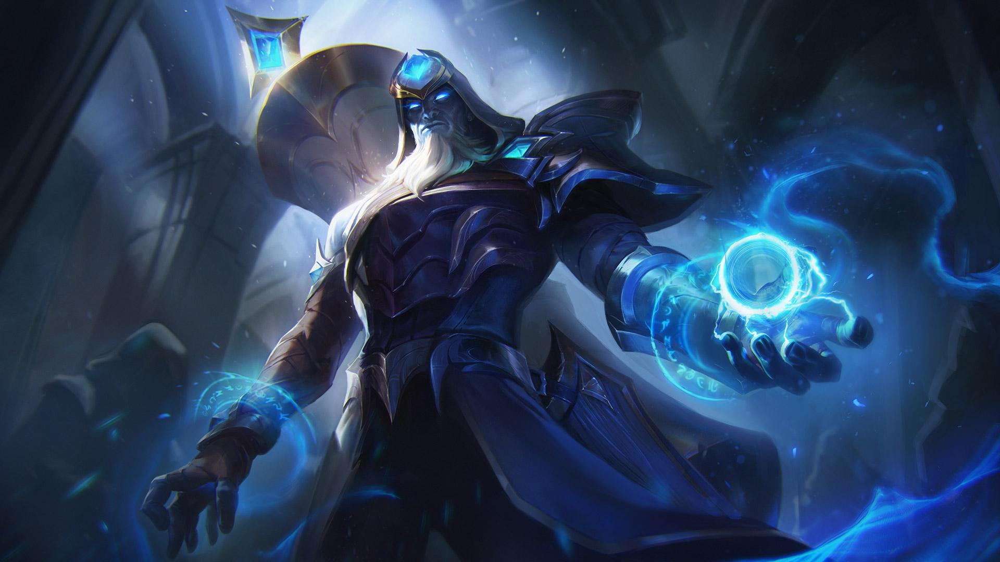
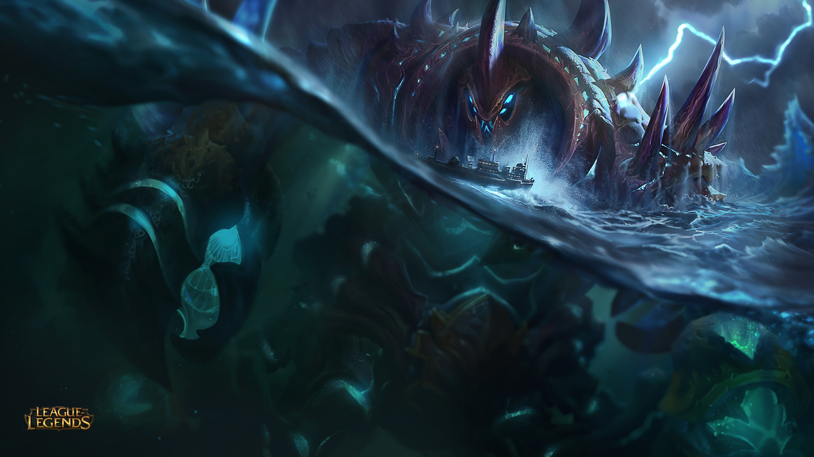

Sobre mi:
Hola, mi nombre es Brallan, tengo 19 años y estudio programacion en el SENA. Disfruto mucho lo que que hago; tambien dibujo, toco instrumentos, actuo y bailo.
Pero lo mas importante es que juego League Of Legens.
el juego es una de mis cosas favoritas en el mundo, ya que me permite un mundo de experiencias que no pense vivir, con amigos y familia. Dudo que no hayan escuchado de este juego antes, pero si no lo conocinan ya es tiempo de hacerlo.

¿Qué es league of Legens
League of Legends es un juego de estrategia por equipos en el que dos equipos de cinco campeones se enfrentan para ver quién destruye antes la base del otro. Elige de entre un elenco de 140 campeones para realizar jugadas épicas, asesinar rivales y derribar torretas para alzarte con la victoria.
LOL entra en la categoría de los llamados MOBAS (multiplayer online battle arena), es decir, un arena de combate multijugador en línea. Estos títulos entran dentro de la estrategia en tiempo real. Se considera un ARTS, una versión de los RTS tipo Starcraft II
El juego se anunció por primera vez el 7 de octubre de 2008 y se lanzó un año después, el 27 de octubre de 2009. El juego estuvo en beta desde el 10 de abril de 2009 hasta el 26 de octubre de 2009.
Mi campeon favorito

CHO'GATH
EL TERROR DEL VACÍO
Hay un lugar entre dimensiones, entre mundos. Para algunos es el exterior, para otros es lo desconocido. Para los verdaderamente entendidos, sin embargo, se trata del Vacío. Pese a su nombre, no se trata de un lugar vacuo, sino del hogar de cosas innombrables, horrores demasiado terribles para la mente de los hombres. Cho'Gath es una criatura nacida del Vacío, algo cuya verdadera naturaleza es tan horrenda que muchos no se atreven a pronunciar su nombre. Sus prójimos estuvieron hurgando en los muros que delimitan las dimensiones en busca de una grieta, una entrada a Runaterra, para poder visitar su paraíso privado de horror en el mundo. Son los nacidos del Vacío, criaturas tan fuera de su tiempo y tan aberrantes que ya ni siquiera forman parte de la historia. Se dice que en otros mundos dirigen formidables ejércitos de criaturas indescriptibles, que una magia poderosa olvidada en el tiempo los expulsó de Runaterra.
Si estas historias son reales, también deberían serlos los rumores expuestos a continuación, esos que afirman que los nacidos del Vacío regresarán algún día. Al día de hoy, algo oscuro se revuelve en Icathia. Cho'Gath, un ser antinatural engendrado por el rencor y la violencia, hace que todos, salvo los más audaces, se encojan de miedo. Cho'Gath parece incluso alimentarse de sus presas, con las que se da festines que lo hacen crecer y abotagarse. Y lo que es aún peor: se trata de un monstruo inteligente, quizás brillante, lo que insinuaría que los horrores que habitan el Vacío son conscientes de sí mismos.
 